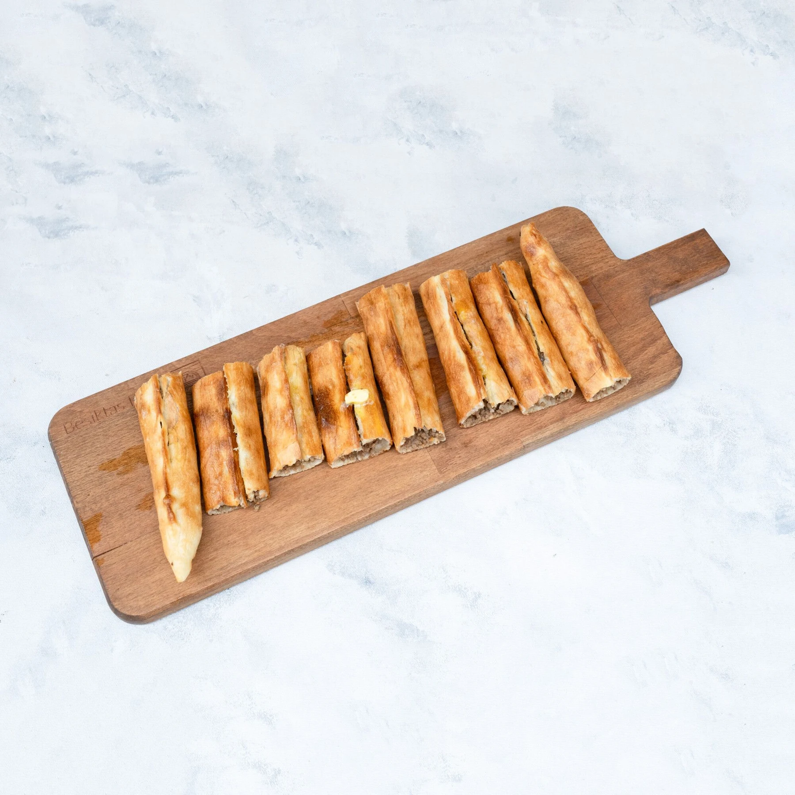
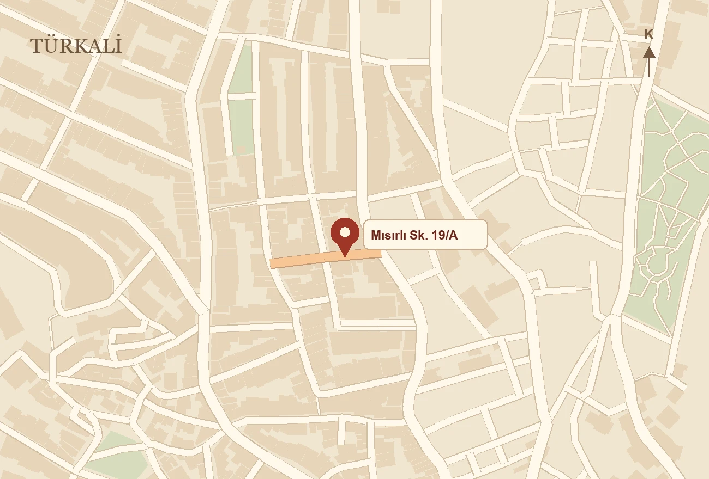

✳ Karadeniz mutfağı · Beşiktaş
Bafra’nın
çıtır pidesi.
İncecik hamur, kavrulmuş kıyma ve soğan. Bafra’nın kapalı pidesi, Beşiktaş’ta Mısırlı Sokak’tan fırın sıcaklığıyla sofraya geliyor.

✳ Fırından seçmeler
Pidenizi nasıl seversiniz?
Kapalı pidenin çıtır kenarı mı, üstü kızarmış açık pide mi? İşte fırından üç farklı tat.
✳ Türkali · İstanbul
Mısırlı Sokak’ta
buluşalım.
Türkali Mahallesi, Mısırlı Sokak No. 19/A34357 Beşiktaş, İstanbul
- Her gün
- –
- Telefon
- 0531 341 10 23

Türkali / Beşiktaş© OpenStreetMap